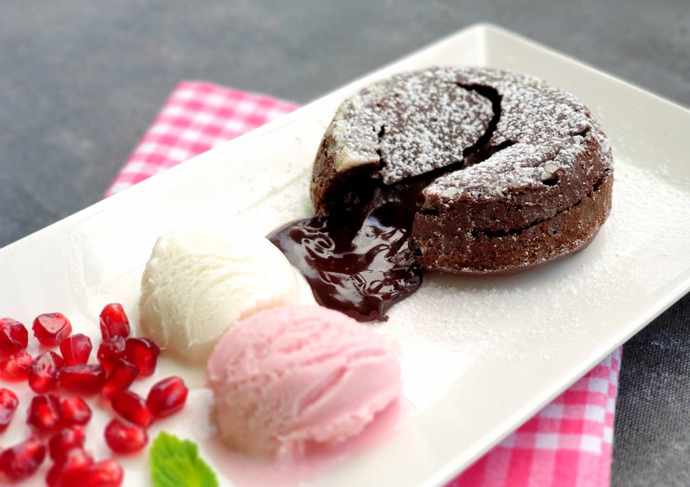

...Akışkan Çikolatalı Sufle...
Çikolatalı tatlıların en kısa sürede pişenlerinden, akışkan içi sayesinde öncelikle görsel şölen yaşatan ve yedikçe yemek isteyeceğiniz sufleyi hazırlamak, püf noktalarını dikkatlice okursanız oldukça pratik. Böylece her seferinde dışarı çıkıp bir kafede yediğiniz o harika sufleyi evde kendiniz yapabilecek, yemek tariflerinizin yanında sunabileceksiniz.
Tarif: Rumeysa KILIÇ

Kaç Kişilik: 4 kişilik Hazırlama Süresi: 30 dakika Pişirme Süresi: 10 dakika
Çikolatalı Sufle İçin Malzemeler:
- 125 gram bitter çikolata
- 125 mililitre süt(1 çay bardağı)
- 2 adet yumurta(Sarı ve beyazları ayrılmış)
- 2 yemek kaşığı tereyağı
- 1,5 yemek kaşığı un
- 1/4 çay kaşığı tuz
- 2 yemek kaşığı toz şeker
Pişirme Kaplarını Yağlamak İçin:
- 1 yemek kaşığı tereyağı
Çikolatalı Sufle Nasıl Yapılır ?
- 125 mililitre sütü bir sos tenceresine alın ve kaynama noktasına gelinceye kadar ısıtın.
- İçerisine çikolatayı ilave edin. Çikolata eridikten sonra ocaktan alın.
- Ayrı bir sos tenceresinde 2 yemek kaşığı tereyağını eritin.
- Üzerine 1,5 yemek kaşığı unu ilave ederek, kokusu çıkana kadar kavurun.
- Unun kokusu çıktıktan sonra çikolatalı süt karışımının içerisine ilave edin ve 2 yemek kaşığı toz şekeri ilave ederek sürekli olarak karıştırın.
- 2 adet yumurta sarılarını da ilave edin, 2 dakika daha karıştırdıktan sonra ocaktan alın ve soğumaya bırakın.
- Derin bir kasede 3 adet yumurta beyazlarını bir çimdik tuz ile birlikte kaseyi ters çevirdiğinizde akmayacak kıvama gelinceye kadar çırpın.
- Soğumuş olan çikolatalı karışım ile köpük haline gelmiş yumurta aklarını birleştirin ve spatula yardımıyla karıştırın.
- Yağlanmış ve kakao ile kaplanmış sufle kaplarına bir parmak boşluk kalacak şekilde harcı bölüştürün ve önceden ısıtılmış 200 derece fırında 10 dakika pişirin.
- Fırından çıkar çıkmaz üzerine pudra şekeri serpiştirip servis edin, afiyet olsun!
Afiyet Olsun!!